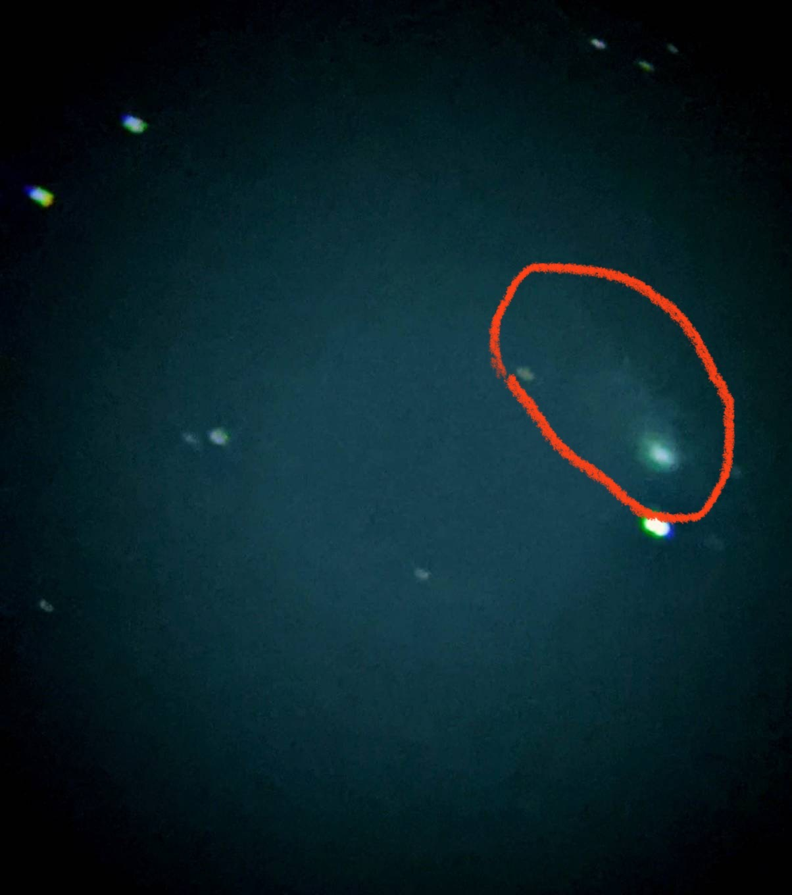

C/2022 E3（ZTF）彗星の観測記録
Observation Record of Comet C/2022 E3 (ZTF)
1. 概要
C/2022 E3（ZTF）は、2022年3月に Zwicky Transient Facility（ZTF）によって 発見された彗星である。
2023年1月に近日点を通過し、 同年2月には地球に接近した。 当時は明るさが増し、各地で観測・撮影が行われた。
今回掲載するのは、地球に接近していた 2023年2月25日に撮影したものである。
2. 観測・撮影記録
当時使用していたスペースアイ700に iPhone 12を取り付け、 コリメート方式で撮影した。
| 観測対象 | C/2022 E3（ZTF）彗星 |
|---|---|
| 撮影日 | 2023年2月25日 |
| 望遠鏡 | スペースアイ700 |
| カメラ | iPhone 12 |
| 撮影方式 | コリメート撮影 |
3. 撮影画像

撮影当時はまだ子供であり、 天体写真の撮影経験も少なかったため、 現在の写真と比べると画質や構図には拙い部分がある。
それでも、自分で望遠鏡を向け、 当時地球に接近していた彗星を撮影できたことは、 今でも印象に残っている。
写真としては拙いものだが、 当時の観測と撮影の記録として、 今回はそのまま掲載することにした。
4. 記録について
撮影から時間が経過していることもあり、 当時の詳しい撮影条件などは確認できていない。
今後も過去の観測記録や写真を整理しながら、 自然観察の記録として残していきたい。
本記事は、個人による天体観測・撮影の記録です。 撮影条件など、一部確認できていない情報があります。